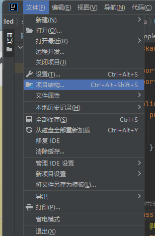

换了两次老师,一天三节测试课,生产队的驴都不敢这么上
今天教了些实质性的内容
1.配置junit
2.apache教程
junit
准确来说是junit4
以idea为例:
打开idea点击左上角文件-选择项目结构

选择模块
点击➕号-选择JAR或目录
打开idea安装目录---找到lib文件夹---选择junit4.jar---点击确定
记得给前面框框打个勾---然后点击右下角应用
这样就配置好了
Apache配置
简单点说:可以在局域网快速搭建网站
如何下载:点我
打开下载页面:跟我圆圈点
点这个
点这个
点这两个中任意一个就会自动下载
解压到本地,修改配置文件:打开Apache24/conf/httpd.conf
大概在第39行,将Define SRVRoot "这里改为安装路径(比如我是d盘)" 例:
改完后记得保存哟
打开cmd将路径切换到apache,或者添加环境变量
apache -k install
apache -k start
打开浏览器输入 本机ip:80
当出现类似图标时表示服务成功开启
在安装目录下,有个htdcos文件,该文件就是需要映射到内网的网站
你可以放入其他以index开头的html或htm文件,用于映射到内网服务
这么说应该能听懂了吧